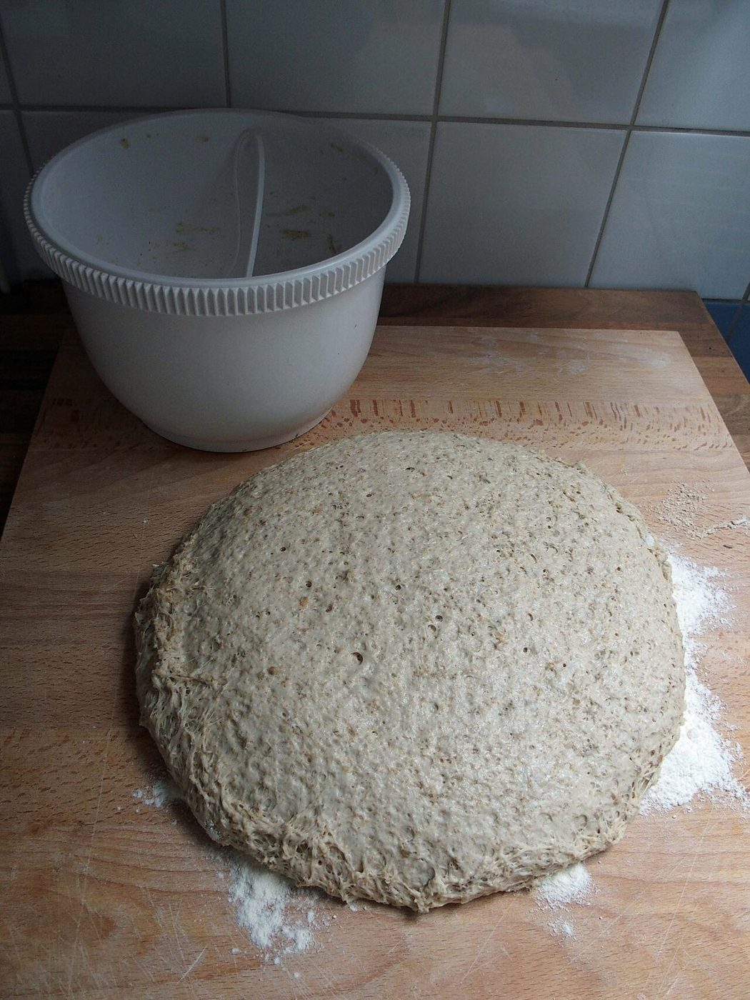
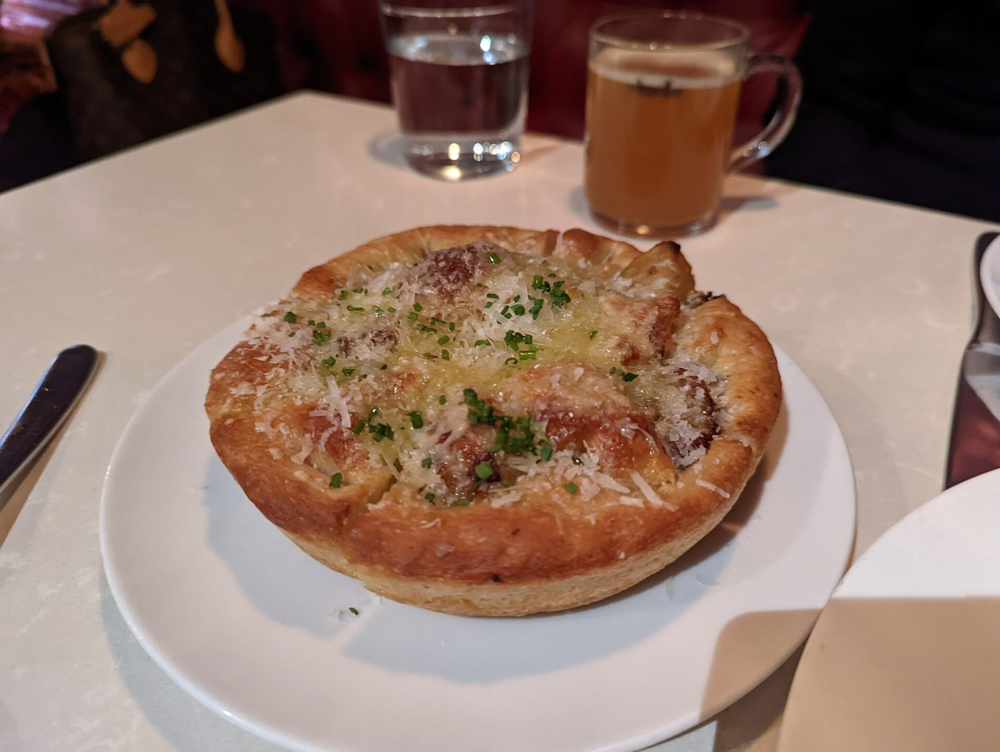

店のこと
お店について
確認できているのは所在地とInstagramだけです。そのほかは準備中で、分かり次第ご案内します。



このサイトのつくり
折りたたみ自転車の部位の配置図
制作側の連想で、お店の理念・由来とは無関係です。ここでは六つの部位を順に説明します。実際の製品の仕様を示すものではありません。
1
ハンドルポスト
ハンドルを支える支柱。たたむときに倒したり縮めたりする部分。
2
フレームヒンジ
車体の中ほどにある蝶番。ここを軸に、前と後ろが二つに折れる。
3
サドル
座る部分。支柱を上げ下げして高さを変える。
4
ペダル
足をのせる部分。たたんだときに出っぱらないよう、内側へ折れるものがある。
5
小径ホイール
小さめの車輪。小さいぶん、たたんだ姿もコンパクトにまとまる。
6
クランプレバー
支柱をはさんで固定する留め具。ゆるめて高さを変え、締めて固定する。